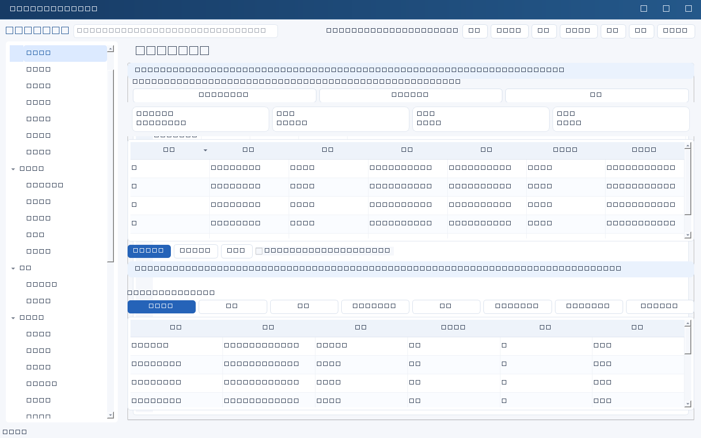

提醒中心在程序内提示需要处理的事项，不发送任何消息、不修改记录状态，也不代表当事人已知悉。所有判断基于本机日期和记录中已填写的日期字段，日期为空则不会产生提醒。
计算方式
每条规则包含：类型、适用业务模块、日期字段、提前天数、长期未更新天数、默认等级和启用状态。三种类型：
| 类型 | 命中条件与等级 |
|---|---|
| 到期类 expiry | 记录指定日期在未来“提前天数”之内命中；已经过期也会列出，剩余天数显示为负数，过期较久会提升等级。适用于合同到期日期、资产维保到期日期、权限复核日期、恢复演练日期、风险复核日期等。 |
| 逾期类 overdue | 任务截止日期已过且状态未结束（已完成、已取消、已关闭不再提醒）。 |
| 长期未更新 stale | 未结束记录超过设定天数没有更新，提示更新进展或归档。 |
同一记录被多条规则命中时只保留等级最高、日期最近的一条，避免清单重复。清单可按等级与模块筛选，双击可直接打开对应记录编辑。
处理状态
选中一条提醒后可标记：
| 动作 | 含义 |
|---|---|
| 标记已处理 | 该提醒不再出现在待处理清单；业务记录本身不受影响。 |
| 稍后提醒 | 填写晚于今天的日期，到期前不再提示，日期过后自动重新出现。 |
| 忽略 | 必须填写原因（例如重复项、不适用），用于去掉噪音。 |
勾选“显示已处理 / 已忽略”可回看被处理掉的项及其原因，便于审计。处理状态记录当时的记录版本：对应业务记录一旦被修改，处理状态自动失效并重新提醒，避免改完忘记复核。状态保存在本地工作库，可随备份迁移。
规则管理
- 进入日常工作→提醒中心，顶部统计显示总数与高/中/低分布，工作台首页也会显示待处理提醒数量。
- 在规则区新建、编辑、复制、启用停用或删除规则；保存前会校验类型、模块、日期字段是否属于该模块，提前天数须在0—365之间，未更新天数在1—3650之间。
- 规则修改按版本保存，界面提交当前版本号；若其他人已改同一规则，会提示刷新后重试而不是覆盖。
- 规则可以JSON导入导出：导入先预览再确认，仅保存配置，不执行其中任何内容。
- 规则读取失败时会退回内置默认规则并明确提示，此时修改无法保存。
边界：这不是日程系统，也不会弹窗或发消息；提醒依赖服务端数据已刷新。考核周期的“届满”只在填写为YYYY-MM-DD（或以该日期开头）时按日期判定，纯文字周期需要人工换算。提醒不构成合规或到期法律判断。

